📖 11/10 漫畫版「て形復習・〜ましょうか」
全 12 頁日漫複習（baoyu-comic --art manga --tone warm）。主角ハルト（約 37 歲、住神樂坂的語言學校新生，虛構）先溫習て形，再在東京的派對和日常生活裡練習 〜ましょうか（我來幫你做嗎？）、〜ませんか（要不要一起？）、まだありますか／もうありません 和 ています。氣泡文字可能糊掉或有錯字，請一律以圖下日語列為準（▶ 播放／⧉ 複製）。
角色設定（一致性）
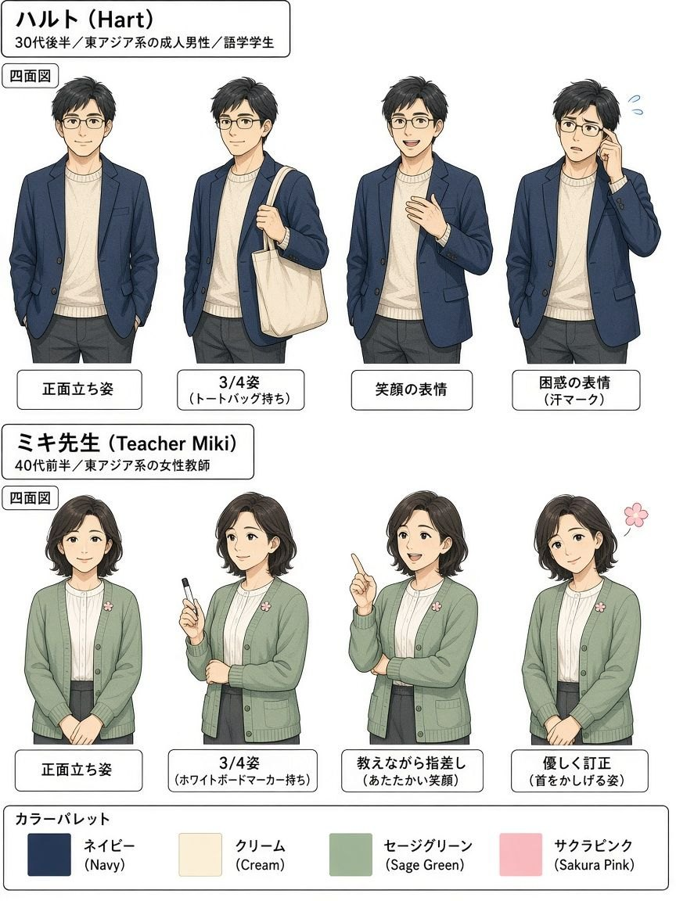
ハルト：東京・神樂坂附近的成人語言學校學生（晚 30 歲、眼鏡、海軍藍外套）。頁面上不使用任何真實姓名／肖像。
ミキ先生：溫柔的語言學校老師（鼠尾草綠開襟衫、櫻花徽章）。
友だち：通用朋友／客人／路人（無名牌真實姓名）。
畫風：日漫 clean ink、screentone、速度線、表情符號、日語氣泡＋中文對照。
圖上小錯誤備註（請以圖下日語列為準）： P01「させて」應為「さて」；白板「出し出」應為「申し出」； P02「て形を視します」應為「て形を復習します」，總結「視ます前の音」應為「ますの前の音」； P03「烘披藤」應為「烤披薩」； P05 中文「要約」應為「邀請」； P06 圖表「出儥幫忙」應為「提出幫忙」； P07 第4格圖上只畫了「お願いします」，完整句應先說「窓を開けましょうか」； P08 第3格多出亂碼氣泡「Cream」，請忽略； P09 多出一個重複小格，中文有亂碼，請忽略； P10「彈」的中文寫成簡體「弹」； P11 咖啡店海報小字亂碼請忽略； P12 部分氣泡改直書，閱讀順序略怪，內容以圖下為準。
12 頁目錄
P01 今日の目標
今日の目標
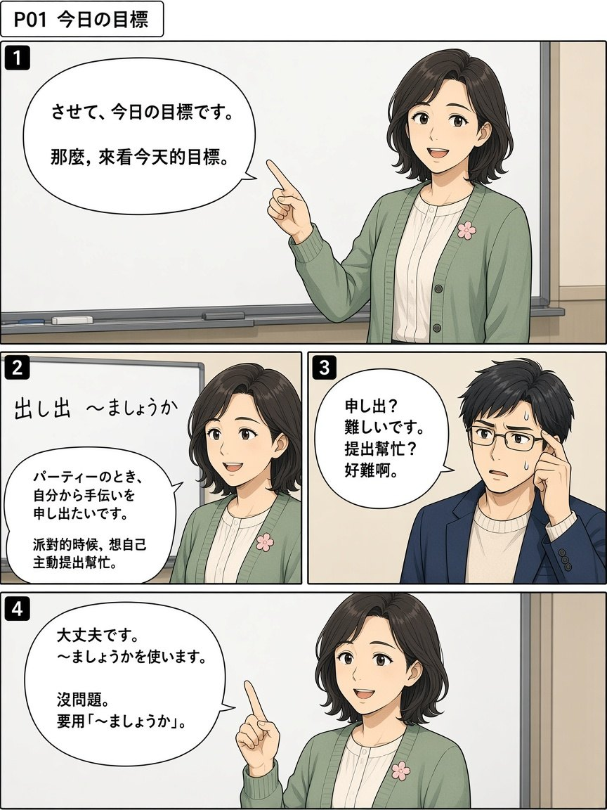
課堂宣布今天的目標：派對時要能自己主動提出幫忙。
P02 て形のおさらい
て形のおさらい
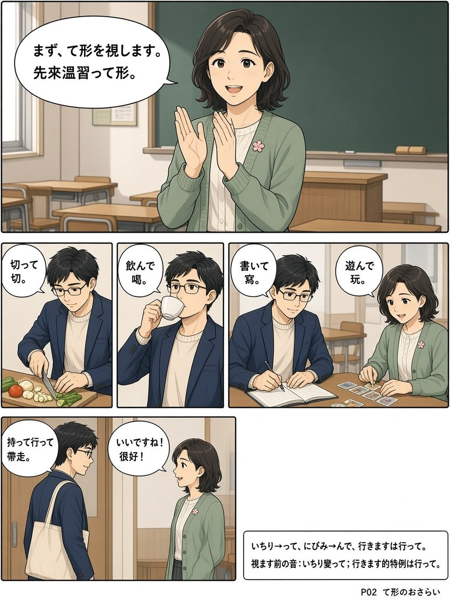
先把昨天的て形再練一遍：切って、飲んで、書いて、遊んで、持って行って。
P03 パーティーの言葉
パーティーの言葉
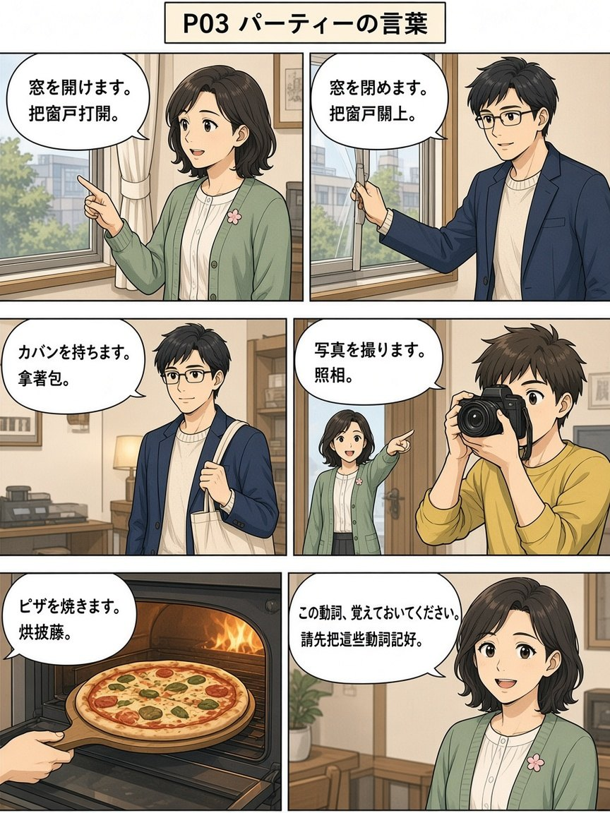
派對會用到的動詞：開窗、關窗、拿包、拍照、烤披薩。
P04 持っていきます・持ってきます
持っていきます・持ってきます
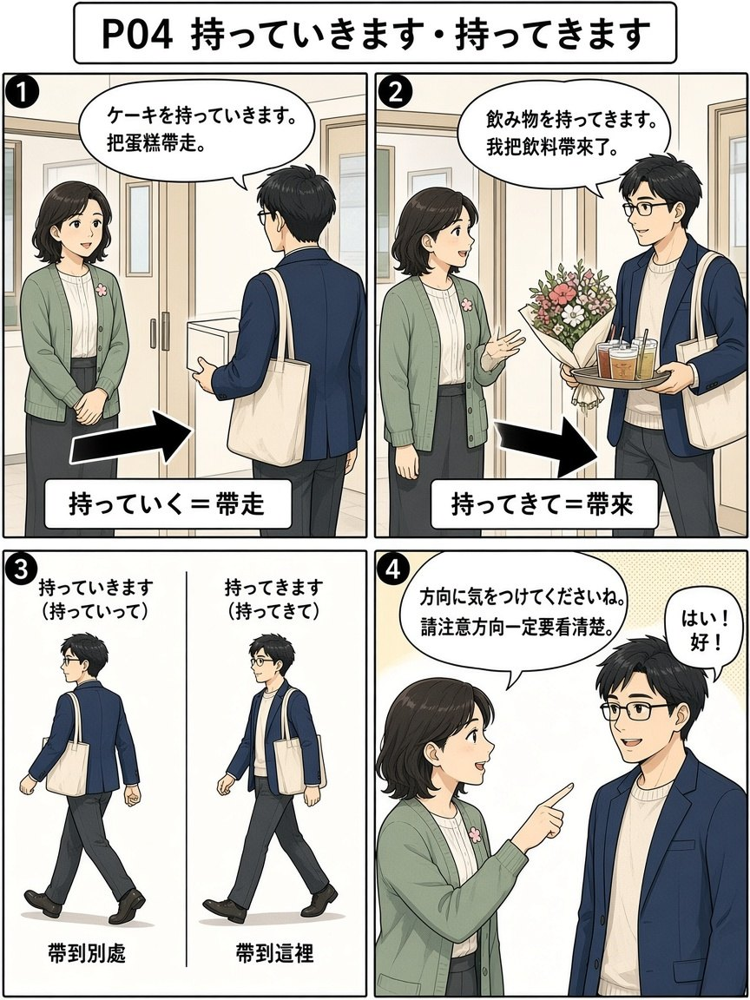
方向不一樣：持っていきます是帶走，持ってきます是帶來。
P05 一緒に撮りませんか
一緒に撮りませんか
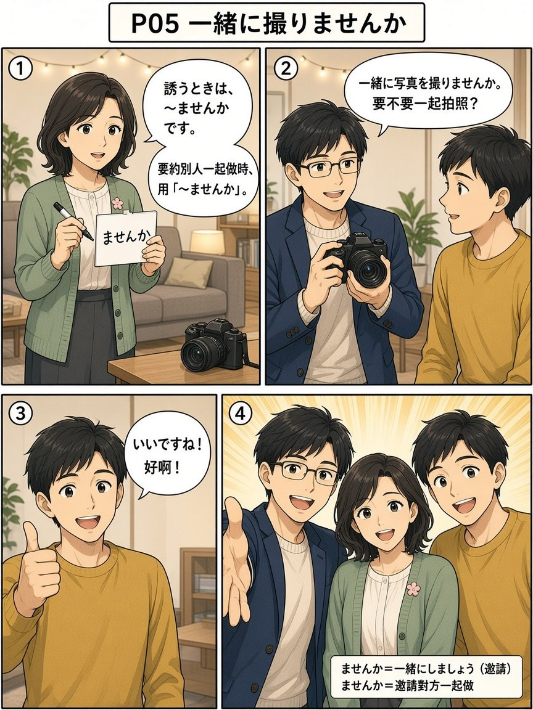
〜ませんか 用來邀請別人一起做。
P06 撮りましょうか
撮りましょうか
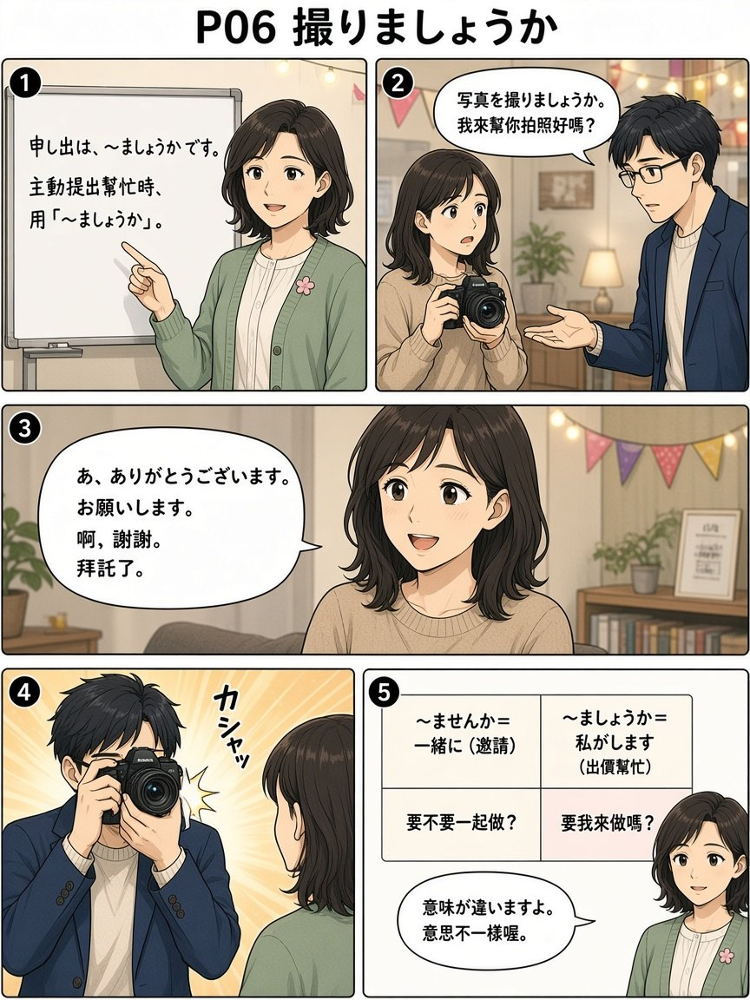
〜ましょうか 是主動提出「我來幫你做嗎？」，和 ませんか 不一樣。
P07 申し出いろいろ
申し出いろいろ
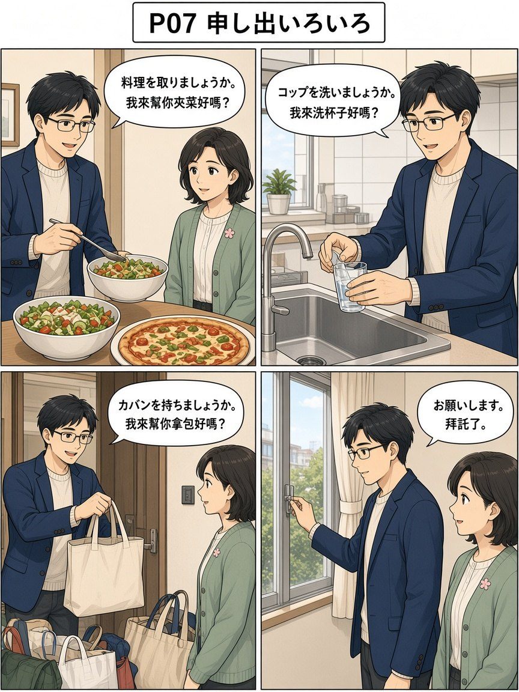
派對上可以主動說的幫忙句。
P08 手伝いましょうか
手伝いましょうか
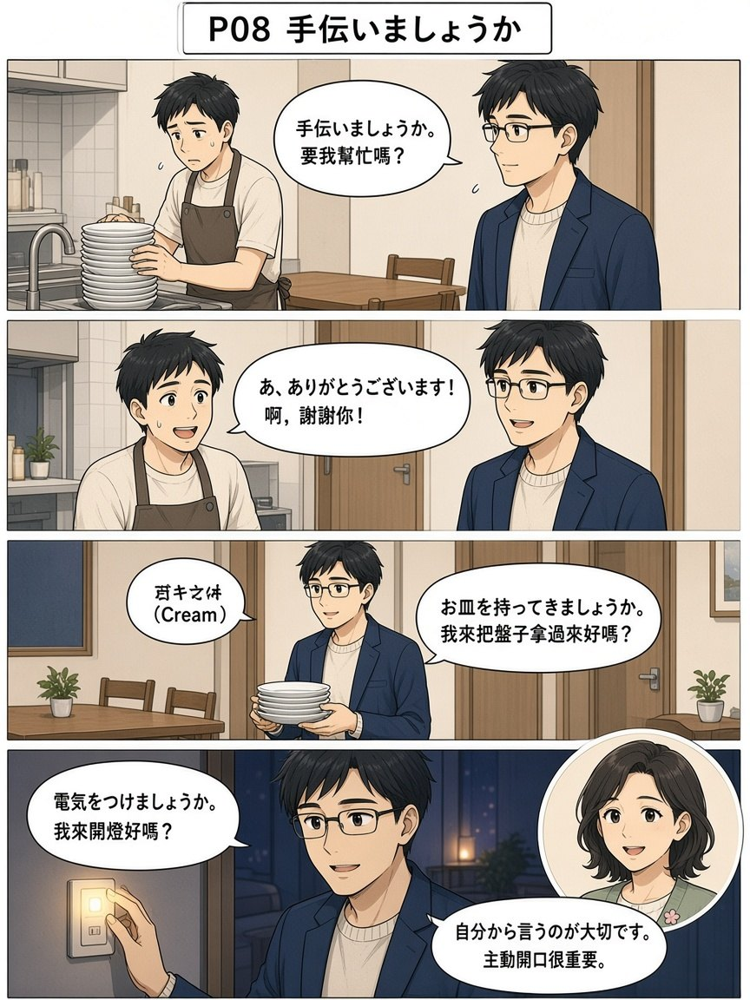
最萬用的出價幫忙：手伝いましょうか。還有把盤子拿過來、開燈。
P09 まだありますか
まだありますか
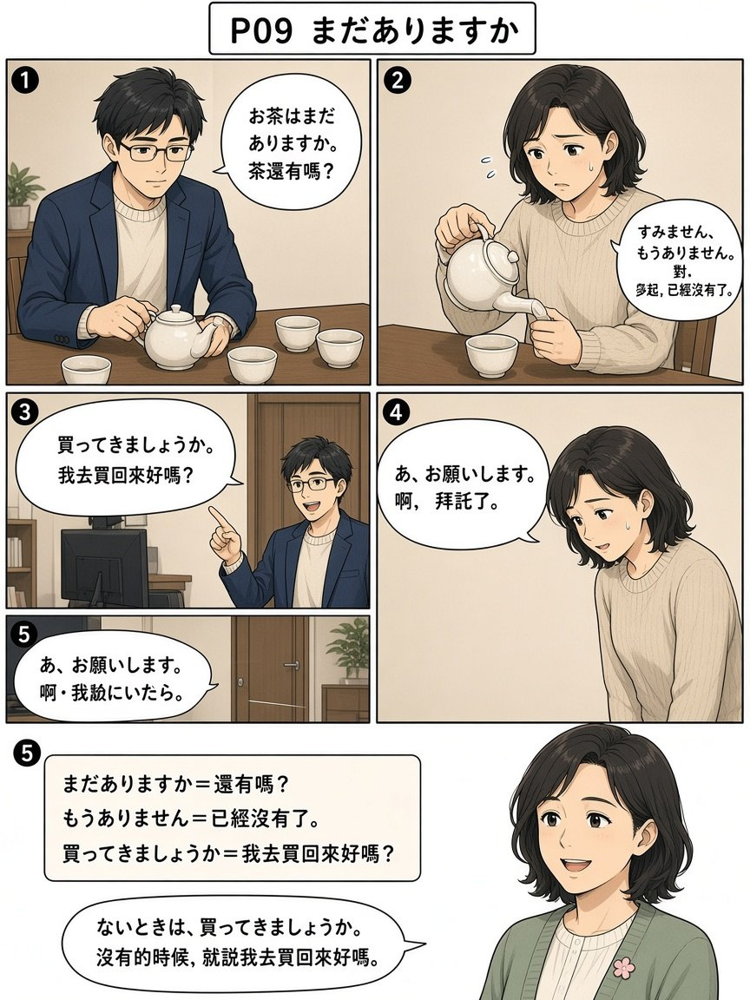
還有嗎／已經沒有了；沒有的話可以說「我去買回來好嗎？」。
P10 ています
ています
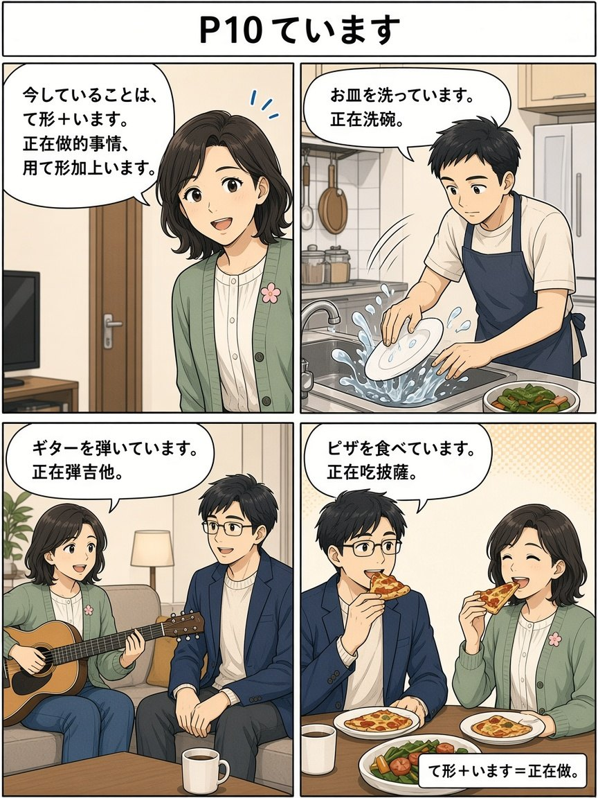
正在做的事情：て形加上 います。
P11 東京の生活で使います
東京の生活で使います
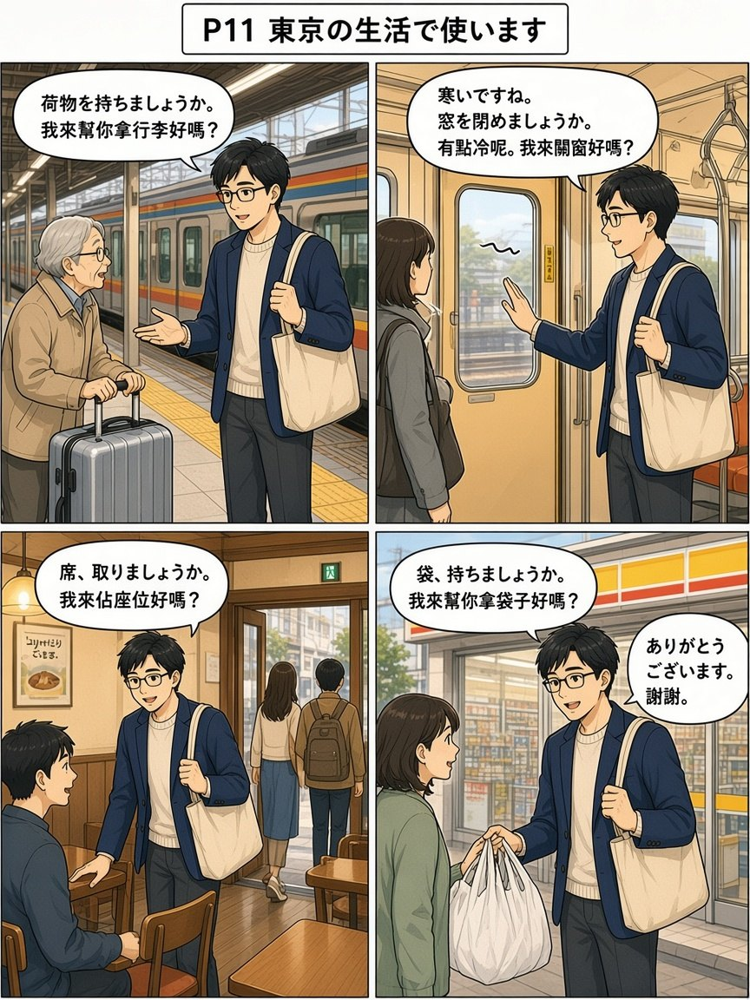
車站、電車、咖啡店、便利商店，都能用今天的「〜ましょうか」。
P12 ミキ先生のまとめ
ミキ先生のまとめ
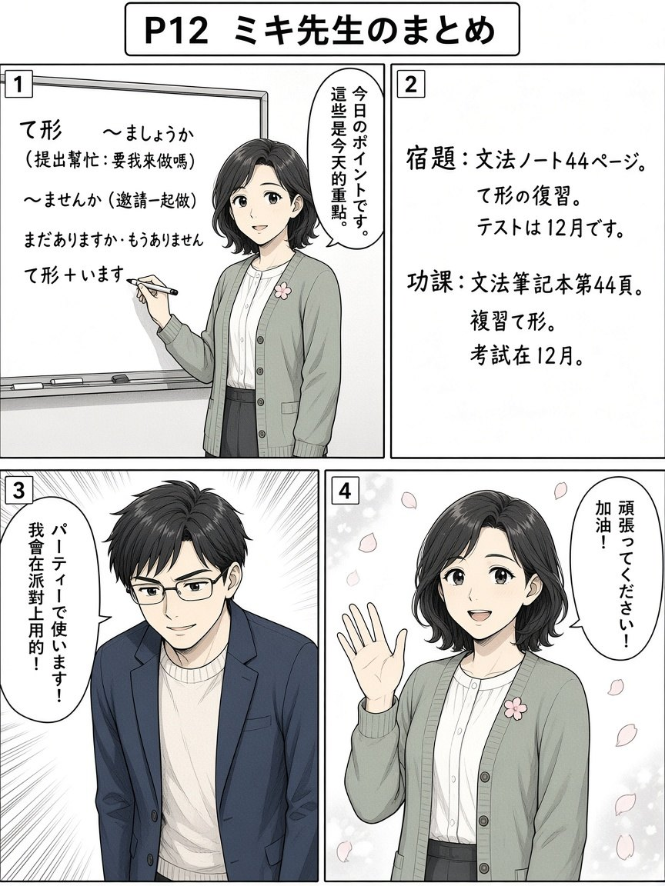
今天的重點和作業：文法筆記本第 44 頁、て形複習；考試在 12 月。